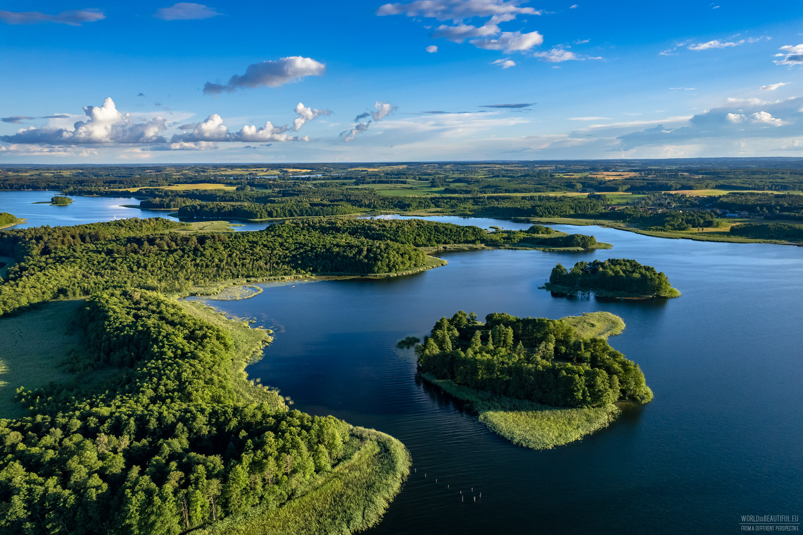
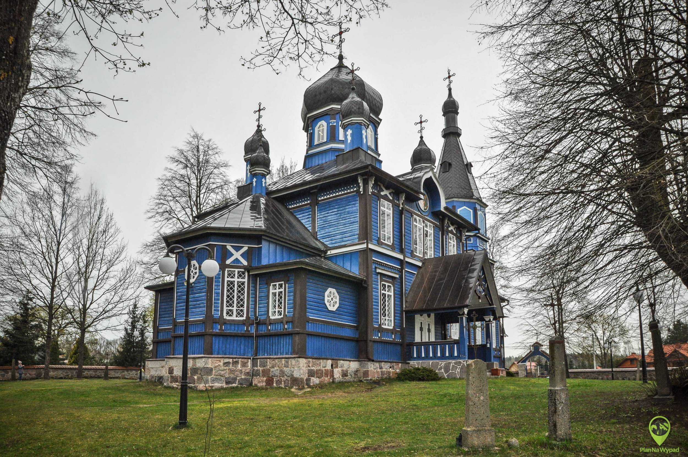

Województwo warmińsko-mazurskie to jeden z najpiękniejszych regionów Polski, nazywany „Krainą Tysiąca Jezior”. Zachwyca malowniczymi krajobrazami, rozległymi lasami oraz licznymi akwenami sprzyjającymi żeglarstwu, kajakarstwu i wypoczynkowi na łonie natury. Turyści mogą odkrywać także gotyckie zamki, zabytkowe miasta oraz słynny Kanał Elbląski. To idealne miejsce dla miłośników aktywnego wypoczynku i kontaktu z przyrodą.
Województwo podlaskie to wyjątkowy region Polski, słynący z dzikiej przyrody, wielokulturowego dziedzictwa i spokojnej atmosfery. Znajdują się tu unikatowe obszary chronione, w tym słynna Puszcza Białowieska oraz liczne parki narodowe. Region zachwyca tradycyjną architekturą, prawosławnymi cerkwiami, tatarską kulturą oraz malowniczymi szlakami rowerowymi i kajakowymi. To doskonały kierunek dla osób szukających bliskości natury i autentycznych doświadczeń.

